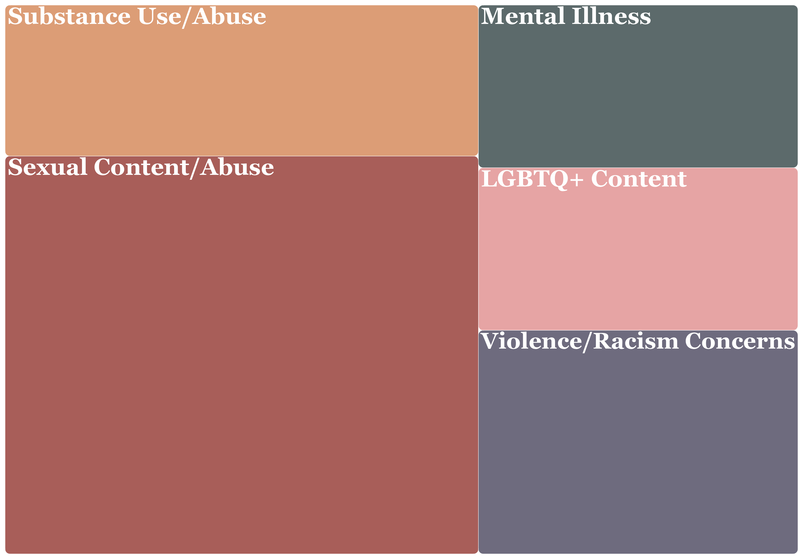

The past academic year has seen an unprecedented surge in book bans, reaching the 10,000 plus springboard for the first time, a significant jump from the 3,362 records of the previous year.
This at the same time tripled the number of banned book titles, per annual Index of School Book Bans data collected by PEN America, a non-profit organization dedicated to the protection of free expression in the United States.
"It's important to know that we don’t always have control as the people who have the control.
I think that it is important to see what could happen because [some books] seem dystopian, but then, when you really look at it, some of them are very possible,"
said Emma Saylor, a full-time staff at Book Culture on 112 Street.
Book Culture on 112 Street keeps an open shelf for banned books
A reason she considered banning books like 1984 and The Handmaid's Tale is that they highlight what could happen to the government and what it could do to the people.
"They are not anti-government, but I think the people in charge see it as that, and they don't want that warning. They don't want that message shared; they don’t want us to know," Saylor said.
Along with the rising number of book bans is the unchallenged prominence of Ellen Hopkins, who, in three consecutive years, is related to the most book ban instances across the country.
The 2023-2024 school year stranded Hopkins with the most bans, over 500.
Her novel Crank, a drug addiction tale of a 17-year-old girl, remained two years on the top ten banned books list.
Last year, the book-ban championship (victim) landed in the hands of Jodi Picoult.
The title — Nineteen Minutes — repeated itself 98 times as it ranked first among all banned book titles.
"Having the most banned book in the country is not a badge of honor – it's a call for alarm.
Nineteen Minutes is banned not because it's about a school shooting, but the because of a single page that depicts a date rape and uses anatomically correct words for the human body," Picoult said.
"In fact, hundreds of kids have told me that reading Nineteen Minutes stopped them from committing a school shooting, or showed them they were not alone in feeling isolated."
Also frequently appearing on the banned books list for at least two years in the top ten are Looking for Alaska, Sold, and Thirteen Reasons Why, with their controversial subject matter often keeping them out of reach from readers.
Hand-drawn infographic of Banned Books Week by Brennah Lee
Books with sexual content and abuse themes, followed by substance use or abuse and violence or racism concerning topics, tended to be under major censorship.
The rest banned content targeted LGBTQ+ people and characters and mental illness-related narratives.

Subject matter of top ten banned book titles from 2021 to 2024
State-wise, Florida and Iowa turned out with the most bans in the 2023-2024 school year.
Book bans in these two states reeled from state legislation, taking together effect with initiatives from local districts.
Distribution of banned books by state in 2023-2024
Florida’s HB1069, which came into force in July 2023, requires the removal of books challenged for “sexual conduct” during the review process.
The Florida Freedom to Read Project, a parent and advocacy organization, coupled with local book-challenging individuals and groups, sharply raised the book bans in Florida.
The same month in 2023, SF's 496 went into effect in Iowa. The law asks all books to be "age-appropriate", and this entails content of sex-act.
Also part of the law keeps “Don’t Say Gay” copycat provisions, posing strict restrictions on class discussions of LGBTQ+ identities.
State-wise book ban instances in three school years
“A good way to go about explicit content or something that might not be age-appropriate at the stage of someone’s development is to have trigger warnings that go along with the book or a little card explaining what happens in the book, read at your own risk.
Some young adult books contain sexual assault or abuse, but I don’t think they should be banned just because of that,” Saylor said.